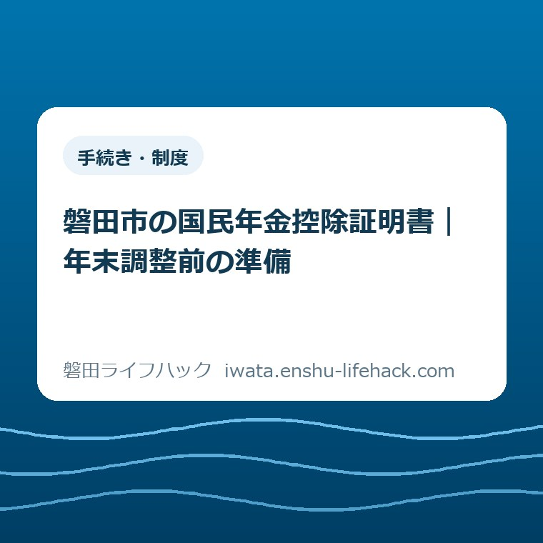

手続き・制度
磐田市の国民年金控除証明書｜年末調整前の準備

この記事の要点
Q. 家族の国民年金の証明書が見つかりません。何から確認しますか。
A. 納付時期と受取方法で届く日が変わります。1～9月納付者の郵送は10月23日～11月上旬の予定ですが、電子送付対象者に紙は届きません。今日は本人と受取方法を確認し、勤務先の提出方法と照らし合わせてください。控除の可否は個別条件で変わります。
書類を集める前に、家族ごとの条件を分ける
国民年金保険料の控除は、誰が払ったか、生計が同じかなど、個別の条件で扱いが変わります。この記事は、家族分の証明書をそろえる段取りの案内です。個々の控除の可否や申告額は、勤務先の担当者や税務署などに確認してください。
年末調整の書類をそろえる方は、すでに仕事と家事の間で時間を使っています。郵便を開け、家族に確認し、会社からの案内を読む。それだけでも手間です。証明書が見つからないときに、さらに役所へ出向く予定まで足す前に、受取方法を確かめたいと思います。
私は大石浩之（磐田市／不動産業）です。書類の準備では、家族の中で「誰が何を持っているか」を分けて考えるほうが、探し直しを減らせると考えています。本記事で述べる家庭内の整理方法は私の提案であり、実際に受けた相談の再現ではありません。
2026年11月2日は、国民年金の控除証明書が順次郵送されている時期です。ただし、全員に同じ日に届くわけではありません。日本年金機構は、納付した時期と受取方法を分けて予定を公表しています。家族の中でも条件が異なれば、届く時期はそろいません。
今日の一歩は、自分または家族の証明書が「郵送で届く予定なのか、電子データで受け取る設定なのか」を確かめることです。金額の転記や提出まで一気に終える必要はありません。まず探す場所を決めると、次に確認する相手も絞れます。
2026年分は、納付時期と受取方法で送付日が違う
日本年金機構の「令和8年分社会保険料（国民年金保険料）控除証明書の発行について」は、2026年10月9日更新です。第3節の送付日を読むと、1月1日から9月30日までに納付した方と、それ以外の年内納付者で日程が分かれています。
2026年1月1日から9月30日までに国民年金保険料を納付した方への書面は、10月23日から11月上旬にかけて順次送付されます。同じ対象者への電子データは、10月16日から10月下旬にかけて順次送付する予定とされています。ここで示すのは送付日であり、個々の家への到着日ではありません。
2026年10月1日から12月31日までに納付し、1～9月の納付者には当たらない方は別の日程です。電子データは2027年1月下旬から順次、書面は2027年2月上旬の送付予定です。10月に初めて納付した家族について、11月の郵便を探し続けても、予定そのものが違う場合があります。
日本年金機構は、電子データの送付対象者には書面を郵送しないと明記しています。「紙が届かない」という一つの状態でも、電子受取、翌年送付の対象、郵送の途中などを切り分ける必要があります。郵便受けだけでは、証明書が発行されていないとは判断できません。
送付予定の根拠は日本年金機構の2026年分控除証明書の案内です。家族ごとの納付時期を確認してから、該当する欄を読みます。この記事の図だけで個別の状況を決めず、予定が変わっていないか公式案内も併せて確認してください。

電子か郵送かを確かめて、探す場所を決める
控除証明書の受取方法を確かめるときは、年金の対象者本人と一緒に確認するのが出発点です。家族が保険料を負担していても、証明書を受け取る側と同じ人とは限りません。納付した人の机だけを探すと、本人が受け取った通知を見落とす可能性があります。
電子受取については、日本年金機構の案内にマイナポータルで通知書を受け取る方法へのリンクがあります。登録した記憶が曖昧なら、本人が利用しているサービスから受取状況を確認します。家族の暗証番号や認証情報を聞き出して代理で操作する前提にはしません。
会社へ電子データを提出できるか、紙の提出を求められるかは、勤務先に確認する項目です。電子で受け取れることと、勤務先の提出方法が決まっていることは別です。「電子で受け取った証明書はどの方法で出しますか」と、会社から届いた年末調整の案内に沿って聞くと話を進められます。
郵送の対象なら、本人宛ての郵便を保管した場所を確かめます。年末調整の案内と一緒に置くなど、提出が済むまでの保管場所を家族で一つ決めるのはどうでしょう。証明書を探した人と会社へ出す人が違っても、どこに置いたかを伝え直さずに済みます。
受取方法を確認しても見つからない場合は、日本年金機構の案内から控除証明書のQ&Aや相談先へ進みます。再交付の可否、受取までの日数、必要な本人確認は、その時点の公式案内に従ってください。この場では、電話すれば当日発行できるといった約束はできません。
家族分は「年金の対象者」と「払った人」を別々に書く
磐田市の「所得控除」は、住民税の社会保険料控除を説明しています。本人または生計を一にする親族が負担することになっている国民年金保険料などを支払った場合、控除額を支払った金額としています。親族の保険料というだけで、誰でも同じ控除を受けられるわけではありません。
市の説明で確かめたいのは、家族関係だけでなく、実際の支払いと生計の条件です。子の名前が書かれた証明書を親が保管している場合でも、それだけで申告する人が決まるとは言えません。本人と家族のどちらが払ったか、途中で負担者が変わっていないかを先に整理します。
家族メモには、「年金の対象者」「支払った人」「受取方法」「確認が済んでいないこと」を分けて書きます。これは申告書の代用品ではありません。勤務先や相談先に事情を説明するとき、家族の名前と金額だけを並べて混乱しないための準備です。
例えば、子の国民年金を親が負担している家庭を考えます。子は証明書がどこにあるかを確認し、親は自分が払った期間を確認する。それぞれの役割を分ければ、同じ書類を二人で探す時間を減らせます。これは段取りの例であり、この家庭なら必ず控除できるという判定ではありません。
支払いをした記録と証明書の内容が合わないと感じたら、家族の記憶だけで数字を修正しないでください。支払日、支払方法、証明書の記載を並べ、どの点が違うのかを相談先に伝えます。分からない箇所を残したメモのほうが、推測で埋めた合計額より確認に役立ちます。

国保や親の認定書と、同じ封筒に入れる前の確認
年末調整の時期には、国民年金以外の書類も集まります。国民健康保険税、介護保険料、生命保険料などを、名称の似た一つの書類として扱わないことが出発点です。どの制度の書類なのかを、封筒ではなく中身の正式名称で確かめます。
国民年金保険料と国民健康保険税は、同じ支払いではありません。国保の年金天引きや口座振替を整理したい場合は、国民健康保険税の年金天引きと口座振替の違いも参照してください。今回の送付日程を国保の通知に当てはめないようにします。
親の介護に関わる家庭では、障害者控除対象者認定書の申請前確認が必要になる場合もあります。国民年金の控除証明書とは確認する条件も発行する窓口も異なります。一つの認定書が届いたから、家族全員の控除の準備が済んだとは考えないほうがよいと思います。
家庭で使う保管袋を一つにまとめること自体は便利です。その中で「国民年金」「国保」「親の認定書」などの見出しを付ければ、勤務先から追加確認を求められたときに探す範囲を狭められます。番号などの個人情報が見える書類を、家族全員が入る連絡グループへ送る必要はありません。
申告のために必要な金額を確認することと、家庭内の負担を精算することも別の作業です。年末に一度で片づけようとすると、税の条件と家族の約束が混ざりやすくなります。まず誰が払ったかという事実をそろえ、申告の判断はその事実に基づいて確認してください。
良い点——電子受取なら、郵便を待たずに確認できる
日本年金機構が電子と書面の送付日を分けて公表している点は、家族の予定を立てる材料になります。私は、全員に同じ「11月ごろ」という説明をするより、自分がどの欄に当たるかを選べることに実利があると考えます。郵便を待つ必要があるかどうかを先に判断できるからです。
電子受取の対象者に紙を送らない仕組みも、受取場所を分かっていれば保管の重複を減らせます。会社へ出す形式が確認できていれば、届いたデータをどこで使うかまでつなげられます。デジタルが得意な家族だけに操作を任せず、本人が受取状況を把握できる形にしたいところです。
磐田市の所得控除の公式説明には、社会保険料控除の条件と控除額がまとまっています。国の証明書の案内と、市の住民税の説明を読み分けられることも利点です。同じ控除という言葉でも、証明書の送付と税額計算は別の説明だと分かります。
一方、市の住民税のページにある数字を、そのまま所得税のすべての控除へ移すことはできません。この記事では年末調整の控除額の個別計算まで広げず、必要な証明書と相談材料をそろえる範囲に絞ります。家族の条件が整っていないまま、還付額の予想を先に出さないためです。
注文したい点——書類の名義だけで家族の役割は見えない
私が案内に注文したいのは、制度名だけでなく、家族がどこで作業を分担するかまで伝えることです。証明書の受取人、保険料を払った人、会社へ出す人が一致しない家庭では、正しい案内があっても「誰が確認するか」が残ります。そこで止まる手間も、準備の負担に含まれます。
家庭向けの説明には、送付日程に加えて「本人が受取方法を確認」「払った人が支払状況を確認」「申告する人が勤務先へ確認」という短い役割表があると助かると考えます。市や日本年金機構がそう案内しているという意味ではなく、私からの提案です。
私は、電子と紙のどちらを勧めるべきかは家庭ごとに迷います。受取操作に慣れた人には電子が便利でも、勤務先への提出方法を調べる時間が新たにかかる場合があります。11月の準備中に受取方法の変更まで急ぐより、今の設定を確かめることを先に勧めます。
手間を減らすための確認で、本人の負担が増えては続きません。家族が尋ねる内容を「証明書は電子か郵便か」の一つに絞れば、空いた時間に答えてもらいやすくなります。今日確認できない場合は、返事をもらう日だけを決めても、探す場所が不明なまま待つより前に進めます。
対案・結論——会社の締切と、証明書の送付予定を分ける
勤務先が示す年末調整の提出期限は、日本年金機構の送付予定とは別に確認します。この記事の11月上旬という日付は、全国共通の会社提出期限ではありません。会社の案内に書かれた締切と、本人に該当する送付予定を並べて見ることで、相談すべきずれが見つかります。
締切までに証明書がそろわない見込みなら、「いつ納付したか」「電子か郵送か」「何が手元にあるか」を勤務先へ伝えます。後日提出が可能か、どの書類を先に出すかなど、実際の対応は担当者に確認してください。家族の判断だけで金額を空欄にしたまま提出したり、受け付けてもらえると決めたりしないことです。
磐田市は年金相談のページで、本庁舎における浜松東年金事務所職員の相談を案内しています。予約制で、相談日が変わる月があるとも記載しています。年末調整の期限が近い場合に、予約日まで待てば間に合うと判断せず、相談先へ用件を伝えてください。
年金の証明書の発行について聞くのか、会社の提出方法について聞くのか、控除の個別判断について聞くのか。電話前に質問を分けると、窓口を行き来する負担を抑えられます。証明書の発行元である日本年金機構、勤務先、税務の相談先を、用件に応じて選びます。
本庁や支所へ行く用事がほかにもあるなら、磐田市の4支所窓口でできることで訪問先を整理できます。ただし、国民年金の控除証明書を支所で即日受け取れるという案内ではありません。受付場所と取扱いを確かめてから移動の予定を立ててください。
大石の視点——書類の枚数より、探し直す回数を減らしたい
私は、家族の年末調整では「すべてを今日終える」より、「同じ物を何度も探さない」段取りを優先したいと考えます。家事の途中で郵便を探した人に、会社の提出形式まで一度に調べてもらうと、誰がどこまで進めたのか分からなくなりがちです。役割を一つずつ分けるほうが現実的です。
今日の成果は、金額を全部書き終えることではなく、証明書の受取方法が一つ分かることです。郵送なら本人宛ての書類の置き場所へ、電子なら本人が確認できる画面へ進めます。翌年送付の対象なら、会社へ伝える事情が分かります。同じ「未着」でも、次の行動は変わります。
私は、家族の助けを当然のものとして扱いたくありません。支払いを引き受けた人にも、書類を保管した人にも、説明に答える人にも時間がかかっています。終わった作業を短く記録し、次の人が最初から聞き直さずに済む状態にする。それが暮らしに役立つ書類整理だと思います。
制度や送付予定は変更される場合があります。この記事は2026年11月2日に公表情報を確認したものです。個別の扱いは担当先へ相談し、最後に磐田市の所得控除と年金相談の公式ページで、現在の説明と相談先を確認してください。
よくある質問
11月2日時点で郵便が来ません。紛失でしょうか。
郵便が来ないだけでは紛失と判断できません。1～9月納付者への郵送は11月上旬まで順次行う予定で、電子送付対象者には紙を送りません。10～12月に初めて納付した方は翌年の送付予定です。本人の受取方法と納付時期を確認し、該当する予定を過ぎても不明なら日本年金機構へ相談してください。
家族の国民年金を払った場合、私の控除になりますか。
家族というだけで一律には決まりません。磐田市の住民税の説明は、本人または生計を一にする親族の社会保険料を支払った場合を対象としています。年金の対象者と実際に払った人を分けて記録し、途中で負担者が変わった場合も整理してください。年末調整での個別の扱いは勤務先や税務署などへ確認します。
10月に初めて納付しました。会社の締切前に届きますか。
2026年10～12月に納付し、1～9月納付者には当たらない方は、電子データが2027年1月下旬から、書面が2月上旬の予定です。勤務先の締切に間に合うとは限りません。納付時期と手元の書類を担当者へ伝え、提出方法を確認してください。会社ごとの対応を、この記事で一律には案内できません。
参考にした公式情報
- 日本年金機構：令和8年分控除証明書の発行について（2026年11月2日確認）
- 磐田市：所得控除（2026年11月2日確認）
- 磐田市：年金相談（2026年11月2日確認）
最終確認日：2026-11-02 ／ 本記事は公表情報と執筆者の見解を分けて記載しています。制度・数値・公開状況は変更される場合があるため、最新情報は磐田市公式ページでご確認ください。